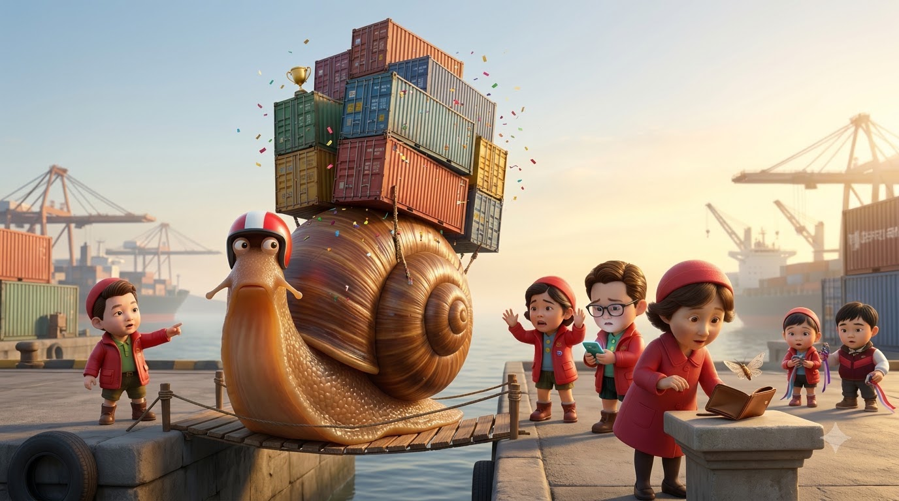

기록은 벌써 도착했네! / 체감은 왜 아직 배송조회야?
수출 기록과 가계소득은 같은 장부가 아닙니다. 성과가 생활에 이르는 경로를 묻는 편집부 풍자입니다. 대사는 창작이며 실제 인물의 발언이 아닙니다.
2026년 11월 19일 정부 잠정 누계 수출액 1조 달러 발표를 소재로 11월 20일 발행한 장면입니다. 연간 확정치나 가계소득 증가를 뜻하지 않습니다.